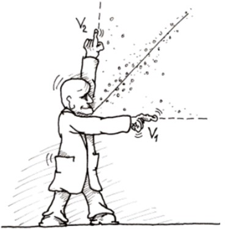
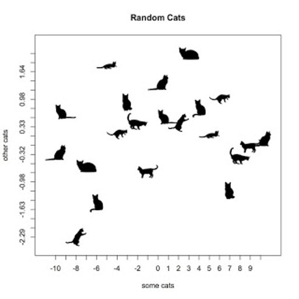

Correlation

Shortcomings of Group Designs
Repeated-measures and between-subjects design are great for testing questions of causality. You can assign people to conditions and see whether the groups respond differently on your dependent measure. However, it is often not possible or feasible to create an experiment.
A second important consideration in your choice of statistical analysis is the goal of your design. Between-subjects and repeated-measure designs ask the question “Are these groups more likely the same or different?” But sometimes you want to ask, “Are these measures related or not?”
A correlational design allows you to collect data naturally, without experimental manipulations. This is exceptionally useful if you cannot manipulate one of the variables. Correlational designs also answer the question of whether measures are related or not, which opens up a completely new class of research questions. For example, what if you wanted to test for burnout in your consultants. You could assign consultants to different billable hour conditions, but what should be the number of hours in each condition? And how would you convince your consultants this is fair? Instead, you could measure each consultant’s weekly hours and the quality of their work and simply see if their related.
Logic of Correlational Designs
A correlational design looks at the covariance between two measures, or the degree to which two measures are related. Mean differences or between-group variances go in the numerator of the previous tests. In contrast, the numerator of a correlational design is something called covariance. The measure looks at the degree to which someone is higher or lower than average on one measure and whether that same person is higher or lower on another measure than the average person. Let’s turn to a couple examples to get a sense of how this works.

Covariance Intuitions Through Examples
Let’s imagine that height and weight are related. Specifically, let’s imagine that the taller somebody is, the heavier they tend to weigh. I know, it’s not much of a stretch of the imagination. But what would that look like in numbers? Well, covariance is here to help.
In the examples about height and weight or consultants’ hours and work quality, the way you compute a covariance between the two measures in which you’re interested is to look at whether and to what degree somebody is above or below the average on one measure and whether and to what extent that same person is above or below the average on the other measure. So for example, if you have one consultant who logs much more billable hours a week than the average, is the quality of their work also much higher than average? Or, is their work quality consistently rated lower than the average? Continue to do this procedure for every single person to create the measure of covariance.
Correlation Metric
The correlation takes the measure of covariance you just created and places it into the numerator. In the denominator, like all of the tests we’ve discussed, is a measure of error. In this case, the denominator is the variances of both of the measures in whose relationship you’re interested. In other words, the correlation is the ratio of the degree to which the two measures vary together, and the denominator is the degree to which the two measures vary separately. And there you have it!
Uses for Correlations
Correlations can be used for Descriptive or Inferential purposes. If you simply are interested in whether and to what extent your consultants’ billable hours and work quality are related, then you are simply Describing the data you have. If, however, you want to build a model to predict the work quality of a given consultant based on the number of billable hours they put in this week, then your are interested in Making inferences about the data you don’t have.
The last example about the use of correlations to predict new values is a very basic example of probably one of the most widely used statistic out there: Regression. Regression analyses use the logic of the correlation but offer enormous flexibility. You can add more than one predictor, like the experience of the consultant, to predict your outcome variable of work quality. You can predict dichotomous outcome variables, like whether a sales person will probably make a sale or not based on how much time they’ve spent cultivating the relationship, or whether a customer will click on the link in your email based on how long they’ve been a customer. You can even account for the fact that you may be measuring something from a group that tends to respond similarly. For example, you can assess the relationship between billable hours and work quality accounting for the fact that your offices in each of the locations around the country have different cultures around work/life balance. And this only scratches the surface! Correlational logic is also in analyses like confirmatory factor analysis, principal components analysis, structural equation modeling, and latent growth curves.

Summary
Correlational designs add an incredibly powerful tool to your toolkit. Understanding covariance and correlations, and when to use them, will open up a universe of statistical methods you can leverage to gain a competitive edge in your business.
One word of warning before you leave. There is a time-worn adage that “Correlation does not equal causation.” Just because two things are related does not mean that the one causes the other. It could. But the other variable could also cause the first. Or, a third variable you didn’t even measure causes both of the variables you measured. Be sure to always keep these caveats in mind!